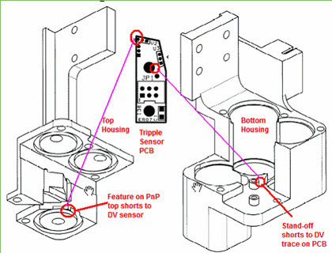
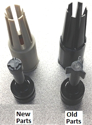

Pick-and-Place Vessel Handling Troubleshooting
Purpose
This document provides information for troubleshooting pick-and-place errors.
General guideline: Replace the collet-ejector assembly and the service loop cable any time there is a pick-and-place error, unless an alignment or other hardware issue can be verified as the cause.
Pick-and-Place Sensor Operation
- Vessel not present: Ejector down >> Magnet at sensor >> 5V signal grounded by sensor >> PCB Indicator LED is On >> 5V at MCC2 is grounded >> Eject indicator in UI is On.
- Vessel present: Ejector up >> Magnet not at sensor >> 5V signal not grounded >> PCB Indicator LED is Off >> 5V present at MCC2 >> Eject indicator in UI is Off.
Identifying Causes of Errors
| If the vessel is... | and the error message is... | then possible causes are... |
|---|---|---|
| Present | At placement
Z-motion error |
|
| At placement
Vessel failed to eject |
|
|
| At pickup
Unexpected vessel |
|
|
| At pickup
Vessel not present (but there is really a vessel at the location) |
|
|
| Not present | At placement
Vessel missing in pick-and-place |
(ejector status goes to ejected at put down when air is applied)
|
| At pickup
Vessel not present. |
|
Pick-and-Place Error Messages
| Pick-and-Place | Error Detail | Transfer From/To | Error Type | Possible Error Cause |
|---|---|---|---|---|
| Sample
(SV) (RV) (DV) |
TL Load Vessels | Supply Carriage | Head 2 - RV sensor:
RV Ejector Failure |
Sensor not in ejected state or not triggered:
Vessel failed to eject:
|
| Incubator | TL Begin Incubate | Reagent Carriage / Incubator Wheel | Vessel not present in pick-and-place |
|
| Vessel failed to eject |
|
|||
| TL Toss | Incubator Wheel / Waste | Vessel not present in pick-and-place |
|
|
| Vessel failed to eject |
|
|||
| TL Begin Wash | Reagent Carriage / Wash Carousel | Vessel not present in pick-and-place |
|
|
| Vessel failed to eject |
|
|||
| TL Wash Carousel Clean | Wash Carousel / Waste (This transfer is only used during initialization and priming) | Vessel not present in pick-and-place |
|
|
| Vessel failed to eject |
|
|||
| Wash | TL Begin | Incubator Wheel / Wash Carousel | Vessel not present in pick-and-place |
|
| Vessel failed to eject |
|
|||
| Wash | TL Toss | Wash Carousel / Incubator Wheel | Vessel not present in pick-and-place |
|
| Vessel failed to eject |
|
Motion Errors
| Pick-and-Place | Possible Motion Error Cause | Action |
|---|---|---|
| Sample |
|
|
| Wash |
|
|
| Incubator |
|
|
TS Notes
| Error | TS Notes |
|---|---|
| Could not return vessel due to presence of RV or DV. | The RV sensor not activating when the RV ejector is triggered causes this error. The ejector is typically in the ejected position but the ejector sensor LED is off. Reposition the RV eject sensor so that it touches the RV collet |
| Pick-and-place still detects placed vessel: Dual-gantry pick-and-place errors | The on-screen instructions for aligning the dual-gantry pick-and-place set the z-alignment too low. This pushes the ejector further up into the collet than normal and cause air leakage at the ejector seal and failure to eject. Set the z-alignment to the normal height on the vessel alignment tool. The on-screen instructions have been updated in the latest software version to align using the green tool. |
| Vessel failed to eject error | This error is caused by the ejector not moving down when the air valve is enabled (air seal leak, air valve failure), bad connection or broken service loop cable wire, eject sensor issue that prevents the system from seeing the sensor status, |
| Vessel failed to eject
or Unable to return SV due to the possible presence of an RV or DV error |
Sometimes the RV ejector sensor cannot activate, even though the ejector is down.
Remove the RV collet and push the RV sensor to the right so that it touches the collet when the collet is installed. The error is intermittent and can be confirmed by observing that the ejector is down but the eject status LED is off. |
| Vessel not present error at any location
or Dropped vessel during transfer error |
The SV sensor signal can be shorted to ground at the cable clamp where the service loop ribbon cable enters the guide chain at the rear. This error is intermittent. |
| Vessel not present in pick-and-place error when attempting to load a DV from the supply carriage | Shorted DV-eject signal. This error is continuous until the short is removed. The DV sensor signal can be shorted to ground at three locations:
Note: Both DV shorts at the PCB are corrected by use of the ROHS version PCB (the ROHS blue-colored PCB is not released yet), or by use of a plastic shoulder washer under the PCB mounting screws (released).
 |
Diagnostic Tests
| Purpose of the Test | Diagnostic Test |
|---|---|
| Check the eject piston seal for air leakage. |
|
| Verify proper vessel ejector operation.
The Pick-and-places test checks:
Note: This test can be used to confirm pick-and-place horizontal alignments and vessel pickup.
|
|
| Run the vessel exerciser to confirm the pick-and-place is working correctly.
Note: The exerciser does not monitor eject sensor status during vessel transfer, so an intermittently broken or shorted service loop cable might not be detected.
|
|
Pick-and-Place Version
The pick-and-place collet and ejector have two versions. The old and new collet/ejector parts are not interchangeable. If an old collet needs an ejector, then replace the entire collet assembly with the new design. Order kit B35062 (Collet/Piston+Magnet+Seal/O-ring/2 screws).
